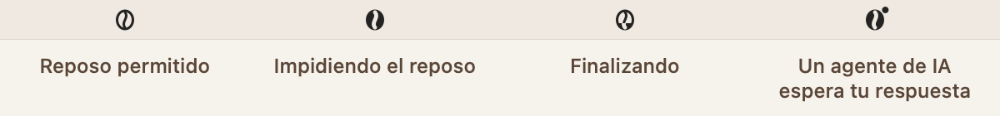
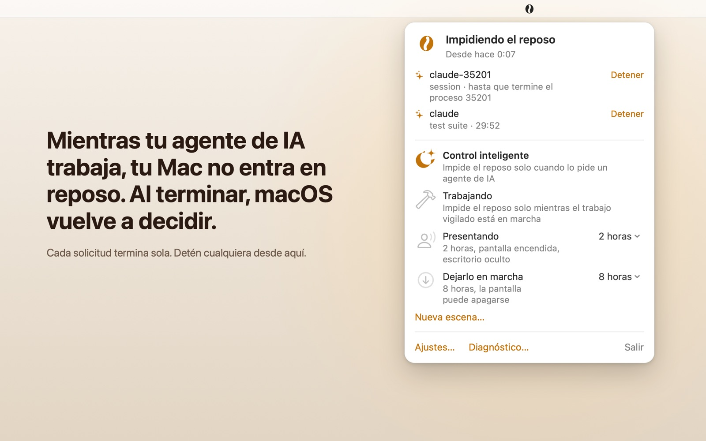
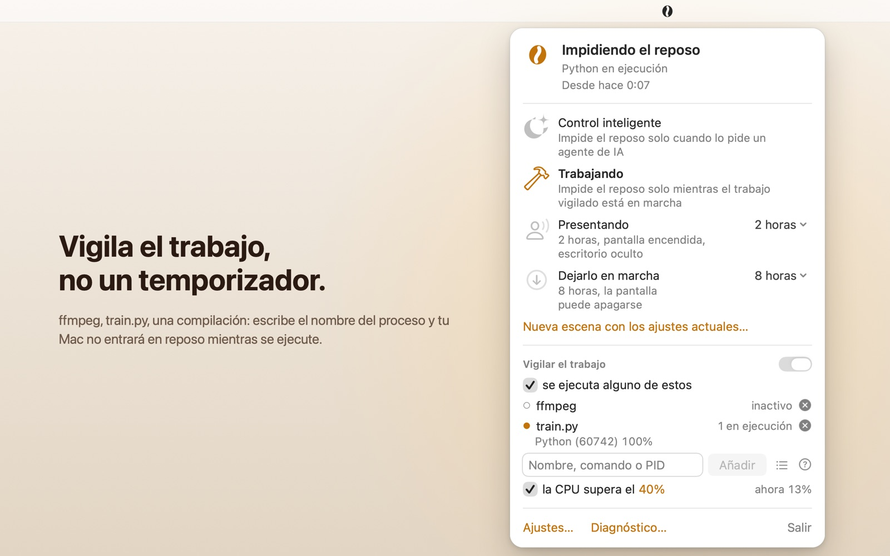
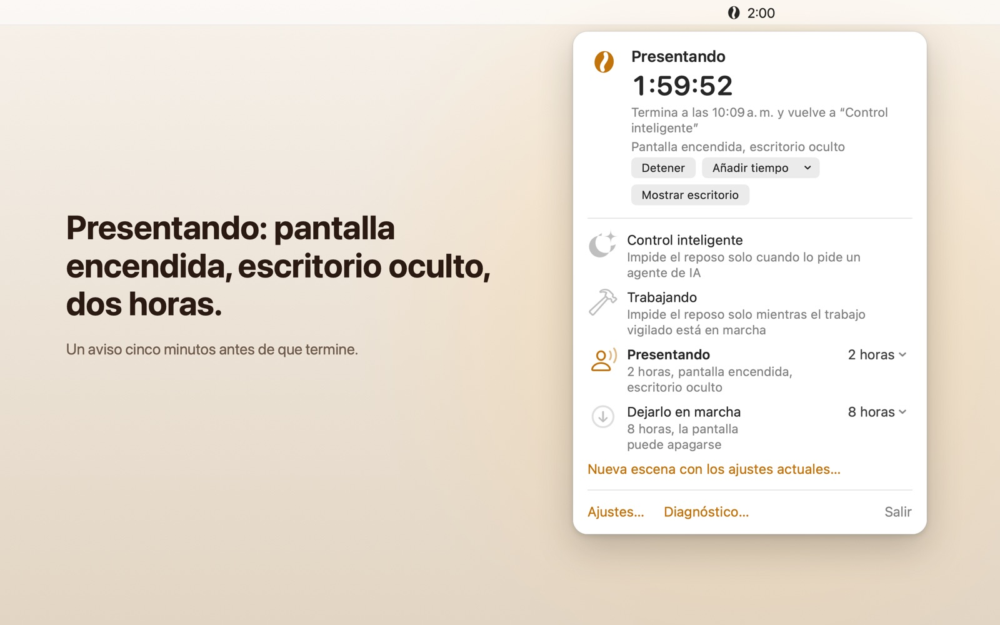
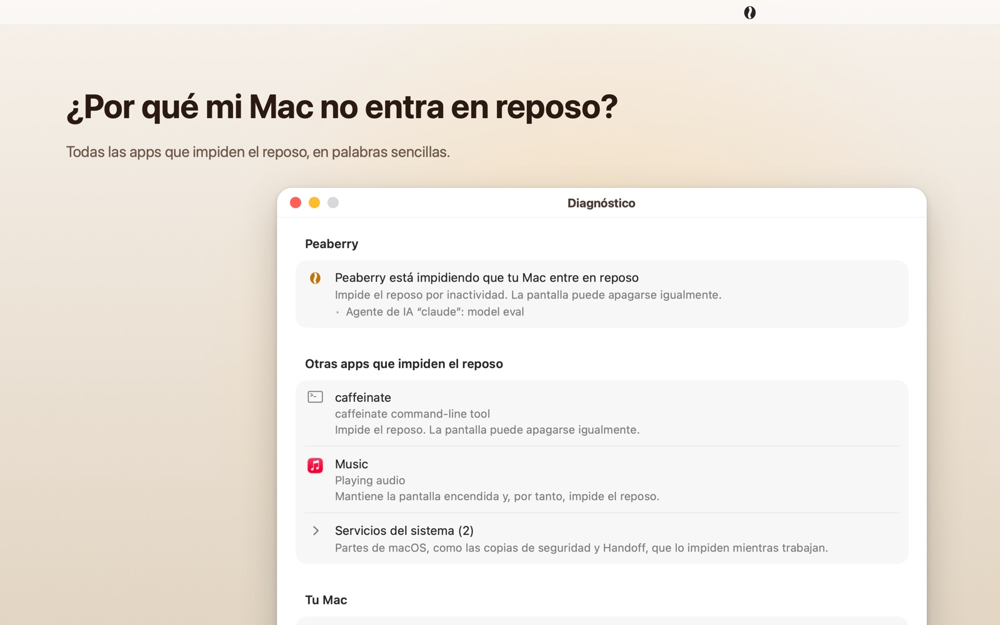
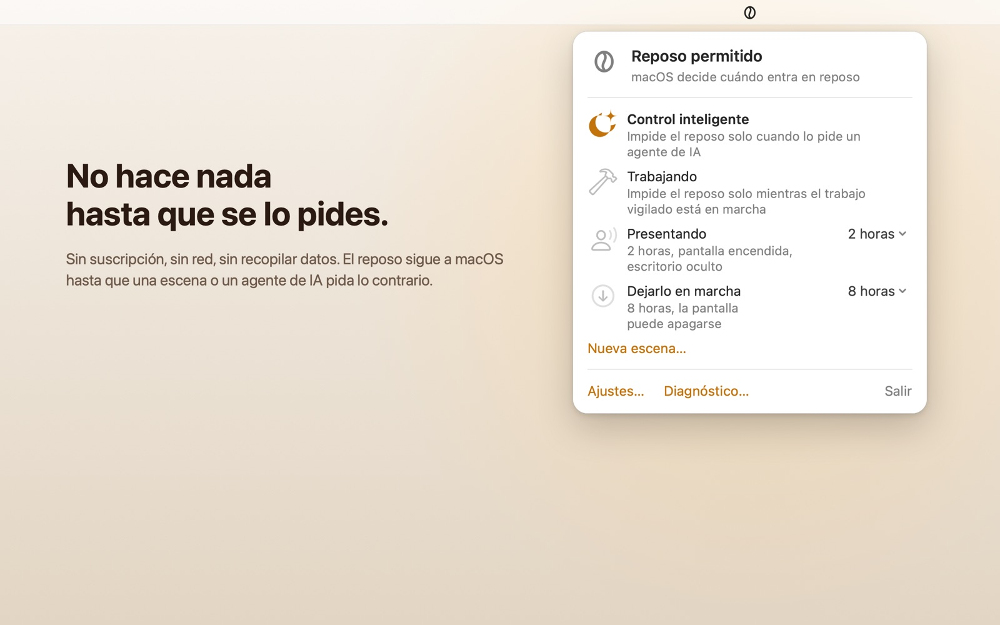

Tus agentes de IA impiden el reposo mientras trabajan.
Cuando termina el último, el reposo vuelve a seguir tus ajustes de macOS. Ya no hace falta desactivar el reposo por si acaso, y el trabajo deja de cortarse a medias porque nadie tocó el teclado.
Muy pronto en el Mac App Store
Consigue Peaberry en el Mac App Store
Para macOS 15 o posterior, en Mac con chip de Apple o con procesador Intel.
Deja que los agentes lo pidan
macOS entra en reposo cuando nadie toca el teclado. Un agente que trabaja en una tarea larga tampoco lo toca, así que tu Mac llega a su tiempo de inactividad y entra en reposo a mitad del trabajo, cortando también la sesión. Con Peaberry, el agente pide exactamente el tiempo que necesita su trabajo.
# impide el reposo exactamente mientras dure esta compilación
open "peaberry://hold?pid=$$&id=claude&reason=build" && ./build.sh
# al salir el shell termina la solicitud: no hay nada que liberar- Cada solicitud termina sola
- Una solicitud va ligada a un proceso o a unos minutos, 24 horas como máximo. Si un agente falla u olvida limpiar, su solicitud termina igual, pocos segundos después de que acabe el proceso.
- Varios agentes a la vez
- Cada agente tiene su propia concesión con su propio nombre, hasta 16 a la vez. El mismo nombre sustituye a la solicitud anterior; nombres distintos conviven. Tu Mac no entra en reposo mientras alguno siga trabajando.
- El interruptor es tuyo
- Los agentes solo pueden pedir. Permitírselo es un interruptor en Ajustes › Agentes de IA, y ningún comando puede activarlo. Hasta que decidas, la primera solicitud en Control inteligente se deja pasar hasta 15 minutos para que el trabajo no se pierda; desde el panel puedes detenerla o permitirlas siempre. Cada solicitud tiene su propio botón Detener.
- Consultar cuesta poco
--briefresponde en una línea.--waitespera hasta que pase algo (termina una solicitud, la batería se agota o baja a tu mínimo, Peaberry se cierra) y entonces imprime una línea; esperar un minuto costó 0,03 segundos de CPU.- Cierra antes que la batería
- Con batería al 20 % o con 20 minutos restantes, el agente que consulta el estado recibe el aviso de llevar su trabajo a un punto de parada, liberar su solicitud y contarte hasta dónde llegó. Cuando la batería baja al 10 %, un mínimo que puedes cambiar en Ajustes › General, Peaberry deja de impedir el reposo por completo, incluidas las solicitudes de los agentes, para que tu Mac pueda entrar en reposo antes de quedarse sin batería. Al agente que consulta el estado se le pide que guarde su trabajo ya y te avise; sus solicitudes vuelven a funcionar al conectar el adaptador de corriente.
Configura un agente
- Abre Ajustes › Agentes de IA y haz clic en Copiar instrucciones.
- Pégalas en el chat de tu agente. Leerá el archivo de la habilidad que viene dentro de Peaberry, la instalará a su manera y te dirá dónde la puso. Sirve cualquier agente que pueda leer un archivo y ejecutar un comando de shell.
- Activa Permitir que otros programas lo soliciten mediante peaberry:// para que las solicitudes duren todo el trabajo.
La habilidad le pide al agente que haga una solicitud al empezar cada sesión, ligada a su propio proceso: tu Mac no entra en reposo mientras el agente piensa, y la solicitud termina con la sesión. Si Peaberry no se está ejecutando, el agente no lo toca. Cuando una actualización trae una habilidad nueva, el agente ve el número de versión más alto y sustituye su copia.
$ /Applications/Peaberry.app/Contents/MacOS/Peaberry --brief
running=1 holding=1 scene=system holds=claude-1940,render:5380 agent-control=on warnings=none skill=5 age=3O deja que vigile el trabajo
Cambia a la escena Trabajando y Peaberry impide el reposo mientras se ejecutan los procesos que indiques, o mientras la CPU está ocupada. Cuando el trabajo termina, espera dos minutos antes de permitir el reposo, así que el hueco entre un trabajo y el siguiente no cuenta.
- Coincide con lo que ejecutas de verdad
- Nombres de proceso,
argv[0], nombres de archivo de scripts, PID y comodines.train.pycoincide conpython3 /work/train.py --epochs 10;python*coincide conpython3.12. También puedes elegir entre las apps abiertas. - Muestra qué coincidió
- El panel lista cada proceso que coincide, con su PID y su CPU, así ves que la regla funciona en lugar de suponerlo.
- Ocupada de verdad
- La regla de CPU usa un promedio de 15 segundos de todos los núcleos frente al umbral que elijas. El panel muestra el valor en vivo para que elijas uno razonable.
- Solo mira cuando hace falta
- Solo lista los procesos mientras una regla los necesita. En Control inteligente, Peaberry lee la CPU del sistema cada tres segundos y nada más.
Cuatro escenas
Solo funciona una escena a la vez. Elige una en el panel, o duplica cualquiera y hazla tuya.
-
Control inteligente
PredeterminadaEl reposo sigue tus ajustes de macOS. Lo único que lo impide es la solicitud de un agente de IA.
-
Trabajando
Mientras haya trabajoImpide el reposo mientras se ejecutan los procesos que indiques o la CPU está ocupada, y dos minutos más.
-
Presentando
2 horasLa pantalla sigue encendida y el escritorio queda oculto tras tu fondo de pantalla, un degradado o un color.
-
Dejarlo en marcha
8 horasPara descargas, exportaciones y copias de seguridad que dejas solas. La pantalla puede apagarse.

Si tu Mac tiene batería, una escena puede funcionar solo con adaptador de corriente: con batería no impide el reposo desde el momento en que lo desconectas, aunque las solicitudes de los agentes de IA siguen funcionando. Una escena que vigila el trabajo también puede impedir el reposo mientras haya una pantalla externa conectada, útil si usas tu MacBook en el escritorio con un monitor, con la tapa abierta o cerrada. Si tu Mac no tiene pantalla integrada (Mac mini, Mac Studio), nunca se aplica.
Cinco minutos antes de que termine una escena con límite de tiempo, una notificación te ofrece 30 minutos más. Un atajo de teclado global puede iniciarla y detenerla; viene desactivado hasta que lo actives.
¿Qué está impidiendo el reposo?
¿O por qué entró en reposo? La pestaña Diagnóstico de Ajustes responde a las dos preguntas, una línea por respuesta.
- Qué está haciendo Peaberry, y qué regla o agente lo pidió.
- Todas las demás apps que impiden el reposo, con los servicios del sistema agrupados en una fila.
- Si hay un reposo programado, y quién lo programó.
- La fuente de alimentación y las pantallas, y cuánto tiempo ha pasado desde tu última actividad.
- El único caso que nada puede evitar: tu MacBook con la tapa cerrada y sin pantalla externa.
Sin letra pequeña
- Sin red
- La app no tiene ningún acceso a la red. El sandbox de macOS rechazaría la conexión si alguna vez lo intentara.
- No recopila nada
- Sin analíticas, sin cuenta, sin rastreo. La etiqueta de privacidad del App Store dice “Datos no recopilados”. Política de privacidad
- Sin ventas adicionales
- Sin suscripción, sin compras dentro de la app, sin anuncios.
- Ligera para tu Mac
- Con el grano en movimiento, el consumo medido fue de alrededor de un 1,5 % de un núcleo; inactiva en Control inteligente, alrededor de un 0,1 %. Puedes desactivar la animación de la barra de menús en Ajustes.
Capturas de pantalla

La solicitud de cada agente tiene su propia fila, con el motivo que dio y un botón Detener. 
Trabajando: los procesos que coincidieron, con su PID y su CPU. 
Presentando: pantalla encendida, escritorio oculto, dos horas. 
Diagnóstico: todo lo que impide el reposo, y por qué. 
Control inteligente: el reposo sigue a macOS hasta que un agente lo pida.
Requisitos
- macOS
- macOS 15 Sequoia o posterior.
- Mac
- Mac con chip de Apple o con procesador Intel. Una sola app universal.
- Idiomas
- English, 繁體中文, 日本語, Español.
- Dónde está
- En la barra de menús, sin icono en el Dock. La primera vez que la abres aparece una breve ventana de bienvenida; si dejas marcada la casilla “Abrir al iniciar sesión” y haces clic en Aceptar, Peaberry se añade a tus ítems de inicio.
- Accesibilidad
- VoiceOver lee el estado del ítem de la barra de menús, por ejemplo “Peaberry, impidiendo el reposo”.
- Límites
-
- Con la tapa cerrada y sin pantalla externa, tu Mac entra en reposo igualmente. Ninguna app del App Store puede cambiar eso.
- Peaberry impide el reposo por inactividad. No cancela un reposo que alguien haya programado.
- Los procesos de otros usuarios, como root, solo coinciden por nombre.
Soporte
Las preguntas, los errores y las sugerencias van al gestor de incidencias en GitHub. El código fuente de Peaberry no es público; ese repositorio solo contiene este sitio web y las incidencias.
Consulta la política de privacidad.
Muy pronto en el Mac App Store